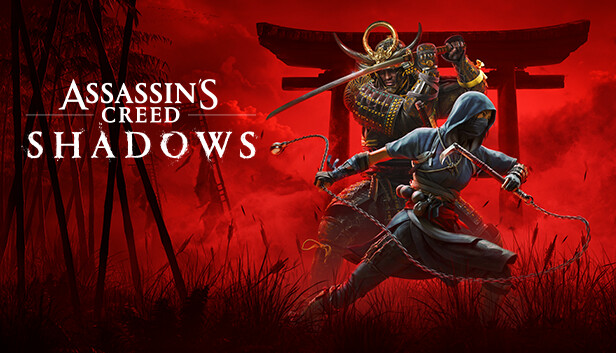

Reviews de Games
Aqui você encontra análises detalhadas dos jogos mais recentes.

Formula 1 2024
F1 24 é um jogo eletrônico de simulação de corrida desenvolvido e publicado pela Codemasters em parceria com a EA Sports. Lançado em 31 de maio, o título faz parte da popular franquia de jogos oficiais da Fórmula 1, oferecendo aos jogadores uma experiência imersiva no mundo do automobilismo.
Nota: ⭐⭐⭐⭐☆

Assassin'S Creed Shadows
Assassin's Creed Shadows parece ser um título que realmente captura a essência da série, elevando-a a novos patamares. As análises positivas que circulam pela internet destacam vários pontos fortes que deixam bastante animado.
Nota: ⭐⭐⭐⭐☆

Red Dead Redemption ||
Red Dead Redemption 2 é um jogo eletrônico de ação-aventura desenvolvido e publicado pela Rockstar Games. É o terceiro título da série Red Dead e uma prequela de Red Dead Redemption, tendo sido lançado em outubro de 2018 para PlayStation 4 e Xbox One e em novembro de 2019 para Microsoft Windows e Google Stadia.
Nota: ⭐⭐⭐⭐⭐

Split Fiction
a história é cativante, a jogabilidade é ótima, não é massiva, os desafios não são impossíveis, você consegue jogar perfeitamente sem bater o desespero que te deixa perturbado para passar, porque o que te motiva é a vontade de jogar e descobrir cada vez mais desafios e se aprofundar na história de cada uma das personagens, é simplesmente impressionante!!!
Nota: ⭐⭐⭐⭐⭐
Inzoi
Viciante e diferente de The Sima4 por vários motivos. Um deles é trazer a simulação de vida sob a ótica coreana de ser e viver. Claro o jogo ainda está em lançamento antecipado e ainda tem muita coisa no pra melhorar, mas sem dúvidas é uma experiência única no mundo dos jogos de simulação.
Nota: ⭐⭐⭐⭐⭐